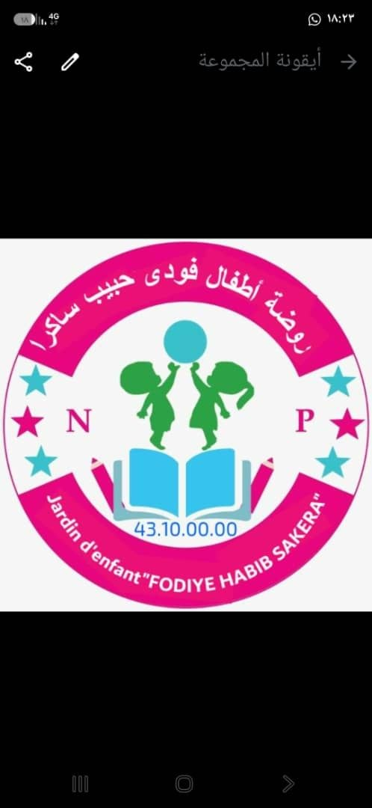

روضة أطفال فودي حبيب ساكرا
Jardin d’enfant FODIYE HABIB SAKERA
تسجيل الدخول
معاينة الواجهة ببيانات تجريبية
دخول المعاينة
☰ القائمة
الإدارة
/
الرئيسية
🔐 صفحة الدخول
☾ الوضع الليلي
✦
معاينة تفاعلية ببيانات وهمية — النظام الفعلي وحساباته يعملان في Streamlit.
إغلاق الوصل